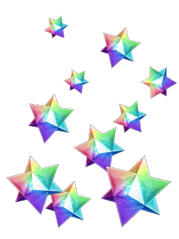
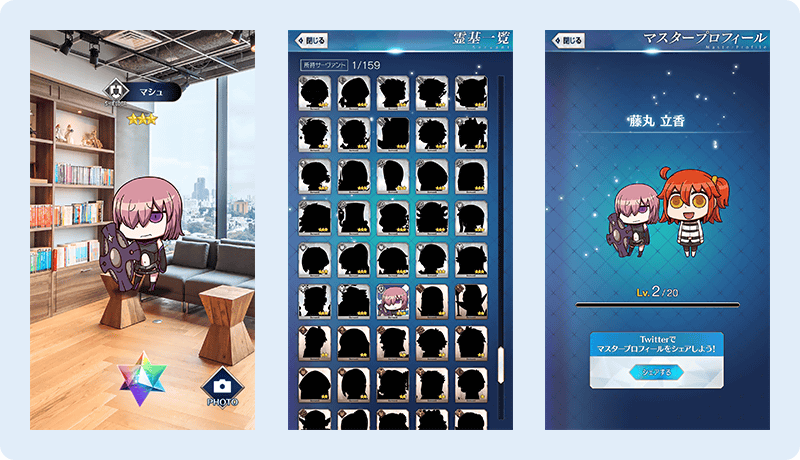

自2017年4月1日(六)釋出「Fate/Grand Order Gutentag Omen」。
為了紀念，對在期間中登入的全員贈送聖晶石。
|
◆宣傳活動舉辦期間◆ ◆宣傳活動對象者◆ ◆禮物内容◆ 聖晶石10個 ◆領取條件◆ 2017年3月31日(五) 23:00～2017年4月1日(六) 22:59的期間中，在初次進行登入的時間點，贈送至禮物箱。 ※期間内未登入的情況無法領取。 |
 |
| Fate/Grand Order Gutentag Omen (App Store、Google Play) 基本遊玩免費 |

■App Store：https://itunes.apple.com/us/app/fate-grand-order-gutentag-omen/id1203594129?l=ja&ls=1&mt=8
■GooglePlay：https://play.google.com/store/apps/details?id=com.aniplex.fgogutentagomen